Alderwick
The Weir and Lark meet the Mere; the lower river is the Vey country
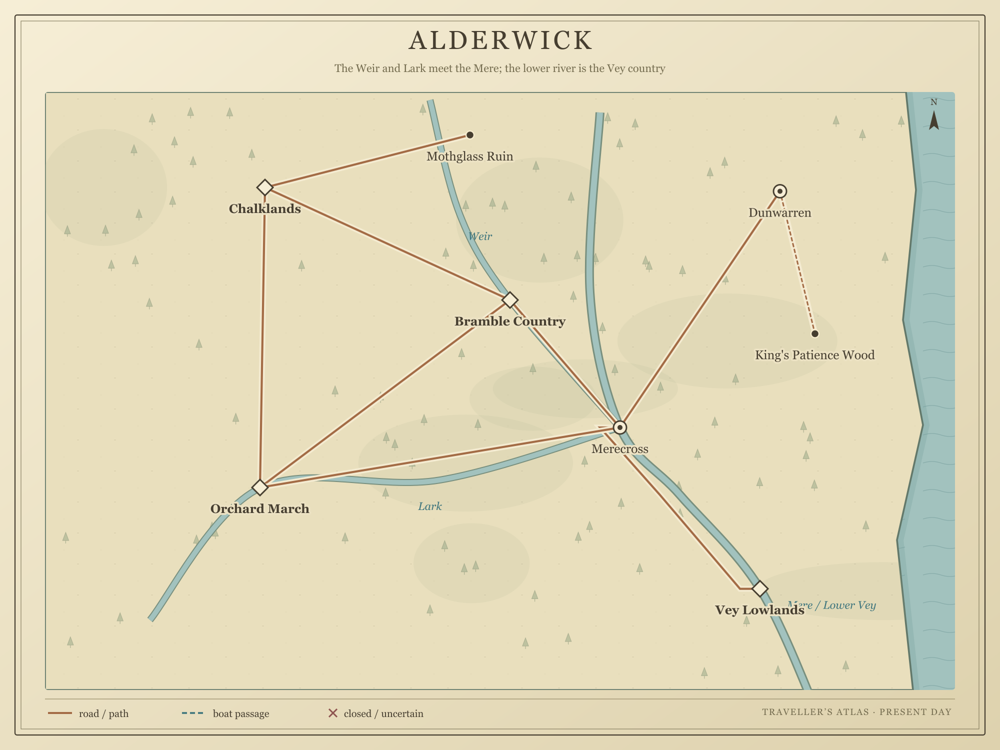
Chalklands · Bramble Country · Orchard March · Vey Lowlands
Named connections (9)
| From | To | Passage | Conditions |
|---|
| Kestrelwatch | Dunwarren | Road | |
| Oakshield | Dunwarren | Road | |
| Dunwarren | Merecross | Road | |
| Merecross | Redbank Reach | Road | |
| Bellafont City | Merecross | Road | |
| Alderwake | Merecross | Road | |
| Mothglass Ruin | Highmead | Road | |
| Merecross | Bramblebridge | Road | The Lower Weir road, separately named from the Lantern Road that ends at Bramblebridge. |
| Dunwarren | King's Patience Wood | Footpath | |
Chalklands
Highmead ridge, sheep commons and the oldest storehouse hills
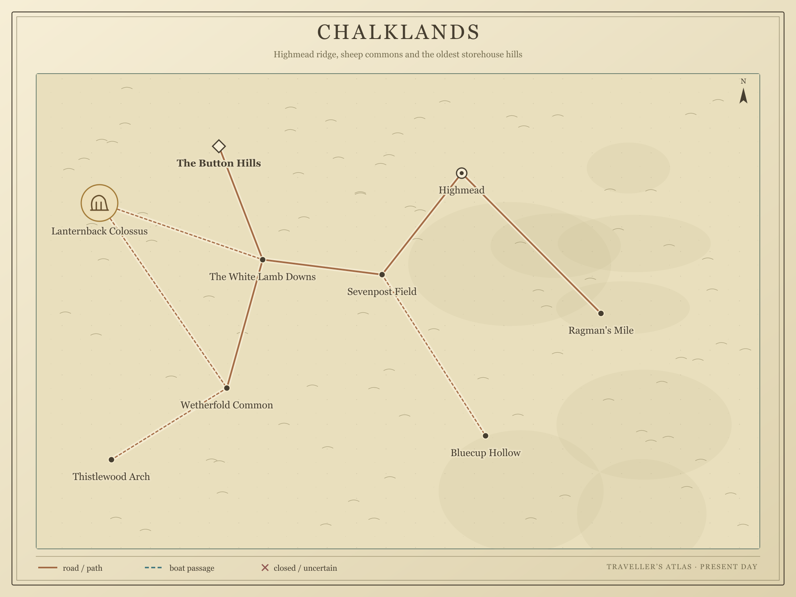
Highmead · The Button Hills
Named connections (13)
| From | To | Passage | Conditions |
|---|
| Merebutton | The White Lamb Downs | Road | |
| The White Lamb Downs | Sevenpost Field | Road | |
| Sevenpost Field | Highmead | Road | |
| Highmead | Ragman's Mile | Road | |
| The White Lamb Downs | Wetherfold Common | Road | |
| Wetherfold Common | Thistlewood Arch | Footpath | A dead-end pasture path to buried foundations; no portal or onward crossing. |
| Sevenpost Field | Bluecup Hollow | Footpath | |
| Ragman's Mile | Mallow Abbey | Road | |
| Bluecup Hollow | Saint Meret's Rest | Road | |
| Mothglass Ruin | Highmead | Road | |
| Highmead | Dunmere Steps | Map entrance | Entrance between the wider map and the local street or landing. This is a scope transition, not a same-plane on-foot journey. |
| Lanternback Colossus | The White Lamb Downs | Footpath | The shepherds' chalk path reaches the open rib shelter and ends there; it does not enter the buried chambers. |
| Lanternback Colossus | Wetherfold Common | Footpath | The southern grazing track approaches the spring hand. Livestock and nesting seasons can require local detours. |
Bramble Country
The Lantern Road ends at the Weir crossing
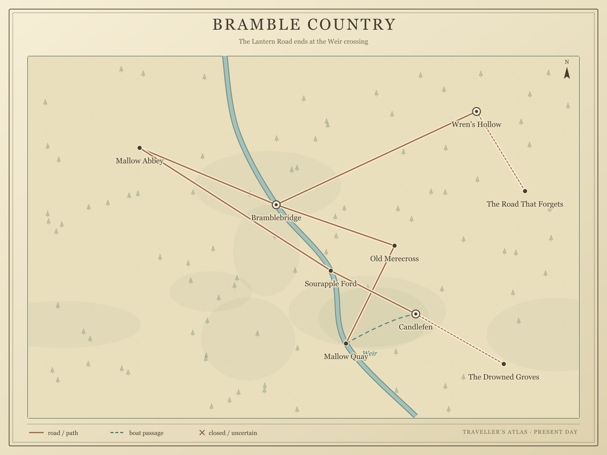
Bramblebridge
Named connections (13)
| From | To | Passage | Conditions |
|---|
| Mallow Abbey | Bramblebridge | Road | |
| Bramblebridge | Wren's Hollow | Road | |
| Bramblebridge | Old Merecross | Road | |
| Old Merecross | Mallow Quay | Road | |
| Mallow Abbey | Sourapple Ford | Road | |
| Sourapple Ford | Candlefen | Road | |
| Candlefen | The Drowned Groves | Footpath | Raised paths end at the flooded grove edge; submerged trunks do not form a through-road. |
| Mallow Quay | Candlefen | Ferry · boat required | Local ferry through the marsh channels; a boat is required. |
| Wren's Hollow | The Road That Forgets | Footpath | Unreliable forest waymarks; no guaranteed shortcut beyond the recorded approach. |
| Ragman's Mile | Mallow Abbey | Road | |
| Sourapple Ford | Alderwake | Road | |
| Merecross | Bramblebridge | Road | The Lower Weir road, separately named from the Lantern Road that ends at Bramblebridge. |
| Bramblebridge | The Last Mile Porch | Map entrance | Entrance between the wider map and the local street or landing. This is a scope transition, not a same-plane on-foot journey. |
Orchard March
Harth north of Boughmeet; Sallowmere beside the western lake
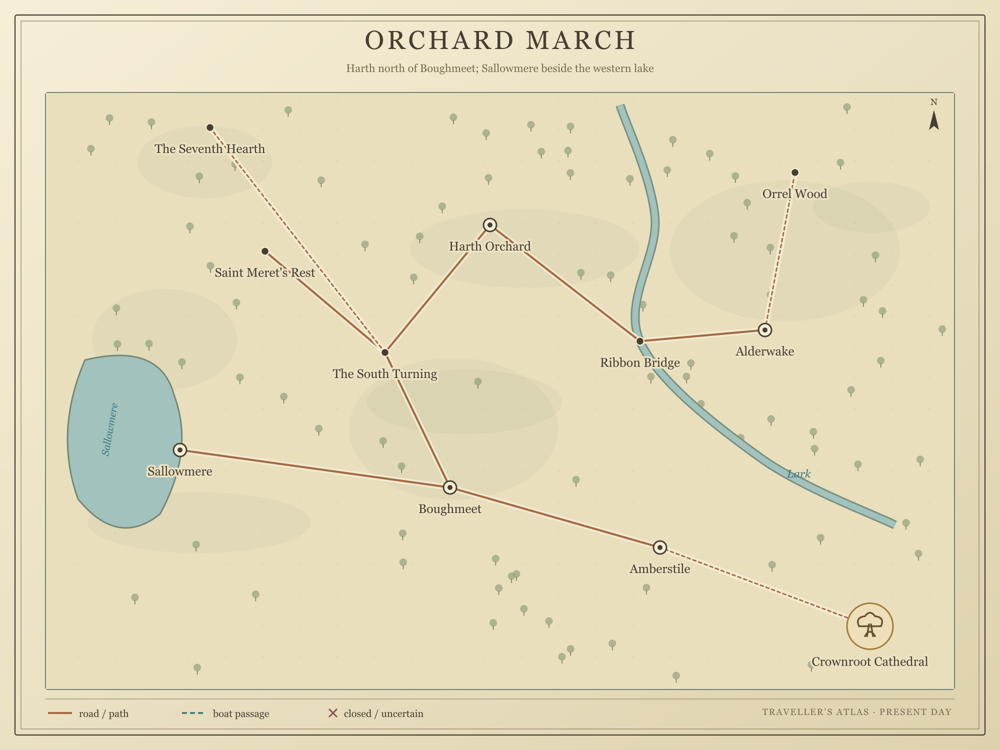
Boughmeet · Sallowmere
Named connections (17)
| From | To | Passage | Conditions |
|---|
| Saint Meret's Rest | The South Turning | Road | |
| The South Turning | Harth Orchard | Road | |
| Harth Orchard | Ribbon Bridge | Road | |
| Ribbon Bridge | Alderwake | Road | |
| The South Turning | Boughmeet | Road | |
| Boughmeet | Amberstile | Road | |
| Boughmeet | Sallowmere | Road | |
| The South Turning | The Seventh Hearth | Footpath | Old hospitality track, bypassed by the present road; ends at the hearth. |
| Alderwake | Orrel Wood | Footpath | |
| Sourapple Ford | Alderwake | Road | |
| Bluecup Hollow | Saint Meret's Rest | Road | |
| Amberstile | Vintner's Reach | Road | |
| Saltmere | Sallowmere | Road | |
| Alderwake | Merecross | Road | |
| Boughmeet | The Copper Kettle | Map entrance | Entrance between the wider map and the local street or landing. This is a scope transition, not a same-plane on-foot journey. |
| Sallowmere | The Pear Walk | Map entrance | Entrance between the wider map and the local street or landing. This is a scope transition, not a same-plane on-foot journey. |
| Crownroot Cathedral | Amberstile | Footpath | A signed graft-carriers' lane reaches the root court. Crownroot is a destination, with no registered onward road through the tree or its orchard boundary. |
Vey Lowlands
From Merecross downstream to the rival tidal harbours
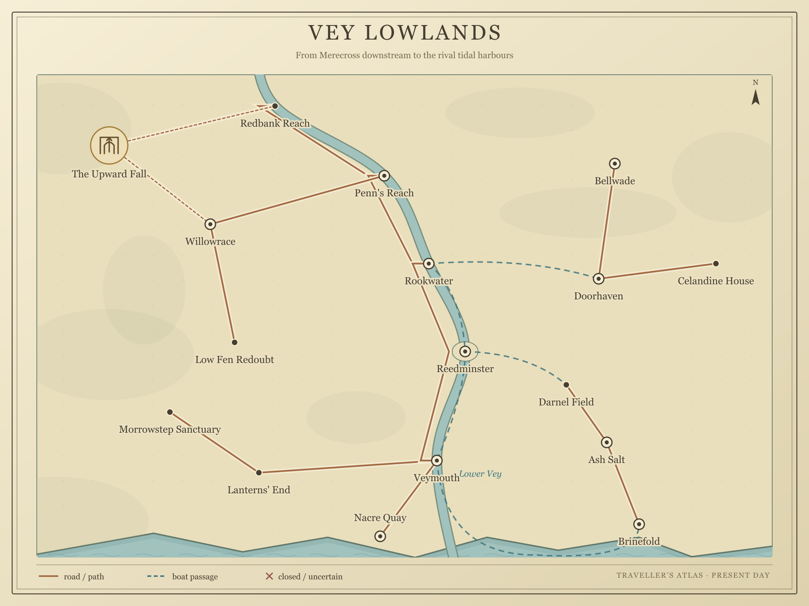
Penn's Reach · Willowrace · Rookwater · Brinefold
Named connections (27)
| From | To | Passage | Conditions |
|---|
| Redbank Reach | Penn's Reach | Road | |
| Penn's Reach | Rookwater | Road | |
| Rookwater | Reedminster | Ferry · boat required | River ferry requiring a boat; no permanent bridge or on-foot crossing is asserted. |
| Reedminster | Veymouth | Ferry · boat required | River ferry requiring a boat; no permanent bridge or on-foot crossing is asserted. |
| Penn's Reach | Willowrace | Road | |
| Willowrace | Low Fen Redoubt | Road | |
| Rookwater | Doorhaven | Ferry · boat required | River ferry requiring a boat; no permanent bridge or on-foot crossing is asserted. |
| Doorhaven | Bellwade | Road | |
| Doorhaven | Celandine House | Road | |
| Reedminster | Darnel Field | Ferry · boat required | River ferry requiring a boat; no permanent bridge or on-foot crossing is asserted. |
| Darnel Field | Ash Salt | Road | |
| Ash Salt | Brinefold | Road | |
| Veymouth | Nacre Quay | Road | |
| Veymouth | Lanterns' End | Road | |
| Lanterns' End | Morrowstep Sanctuary | Road | |
| Veymouth | Brinefold | Coastal sailing | Coastal passage outside the shoals; not a land shortcut. |
| Rookwater | Veymouth | Road | The west-bank road continues past the Reedminster ferry landing without entering the island. |
| Merecross | Redbank Reach | Road | |
| Veymouth | The Halfway Light | Sea passage | Registered sea passage between harbours; vessel, pilotage and weather are required. No on-foot route is created. |
| Brinefold | Glassharbor | Sea passage | Registered sea passage between harbours; vessel, pilotage and weather are required. No on-foot route is created. |
| Nacre Quay | Aster Quay | Sea passage | Registered sea passage between harbours; vessel, pilotage and weather are required. No on-foot route is created. |
| Penn's Reach | The Violet Steps | Map entrance | Entrance between the wider map and the local street or landing. This is a scope transition, not a same-plane on-foot journey. |
| Willowrace | The Open String Hall | Map entrance | Entrance between the wider map and the local street or landing. This is a scope transition, not a same-plane on-foot journey. |
| Brinefold | The Green Awning Yard | Map entrance | Entrance between the wider map and the local street or landing. This is a scope transition, not a same-plane on-foot journey. |
| Rookwater | The Names House | Map entrance | Entrance between the wider map and the local street or landing. This is a scope transition, not a same-plane on-foot journey. |
| The Upward Fall | Redbank Reach | Footpath | The north-bank inspection path reaches the public viewing platform and the ordinary sluice works. |
| The Upward Fall | Willowrace | Footpath | A mill-workers' embankment path follows maintained ground. It never passes through the rising water or the old aqueduct gallery. |
Bellafont
Irrigated terraces, cloth canals and southern wine roads
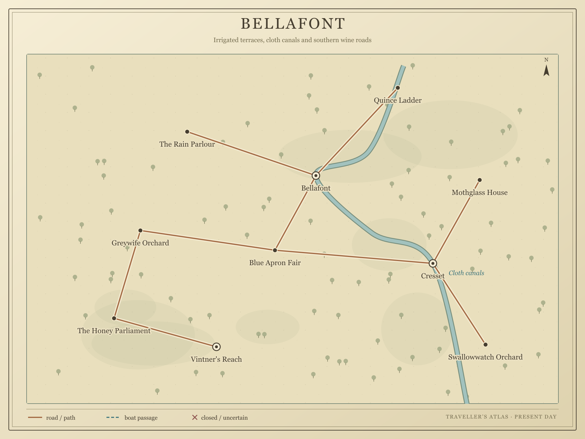
Named connections (12)
| From | To | Passage | Conditions |
|---|
| The Rain Parlour | Bellafont City | Road | |
| Bellafont City | Blue Apron Fair | Road | |
| Blue Apron Fair | Cresset | Road | |
| Cresset | Swallowwatch Orchard | Road | |
| Bellafont City | Quince Ladder | Road | |
| Blue Apron Fair | Greywife Orchard | Road | |
| Greywife Orchard | The Honey Parliament | Road | |
| The Honey Parliament | Vintner's Reach | Road | |
| Cresset | Mothglass House | Road | |
| Amberstile | Vintner's Reach | Road | |
| Gullstrand | Vintner's Reach | Road | |
| Bellafont City | Merecross | Road | |
Carrowmere
Shipyards, tidal islands and western cliff harbours
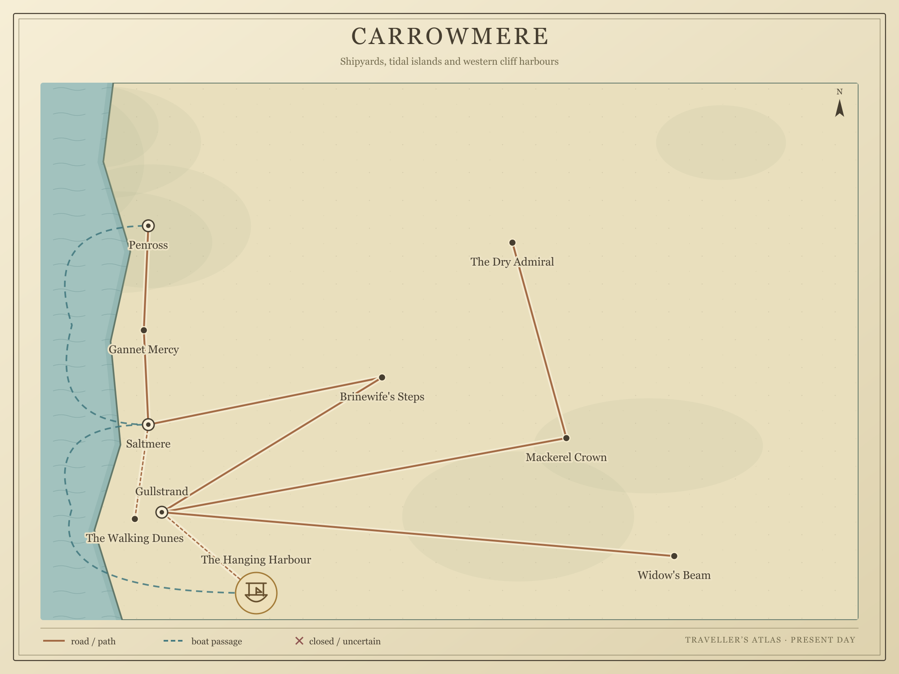
Gullstrand
Named connections (16)
| From | To | Passage | Conditions |
|---|
| Penross | Gannet Mercy | Road | |
| Gannet Mercy | Saltmere | Road | |
| Saltmere | Brinewife's Steps | Road | |
| Brinewife's Steps | Gullstrand | Road | |
| Gullstrand | Mackerel Crown | Road | |
| Mackerel Crown | The Dry Admiral | Road | |
| Gullstrand | Widow's Beam | Road | |
| Saltmere | The Walking Dunes | Footpath | |
| Stonewake | Penross | Road | |
| Saltmere | Sallowmere | Road | |
| Gullstrand | Vintner's Reach | Road | |
| Gullstrand | Candleport | Sea passage | Registered sea passage between harbours; vessel, pilotage and weather are required. No on-foot route is created. |
| Saltmere | Penross | Sea passage | Registered sea passage between harbours; vessel, pilotage and weather are required. No on-foot route is created. |
| Gullstrand | The Closed Launch | Map entrance | Entrance between the wider map and the local street or landing. This is a scope transition, not a same-plane on-foot journey. |
| The Hanging Harbour | Gullstrand | Footpath | A maintained cliff-top path reaches the inspected upper yard. It grants no automatic access to moving cradles or the lower hoist. |
| The Hanging Harbour | Saltmere | Coastal sailing | A boat passage reaches the lower landing when the swell and the harbour keeper permit. No on-foot journey is registered for this water connection. |
Dunmarrow
Peat rivers, iron uplands and the northern port
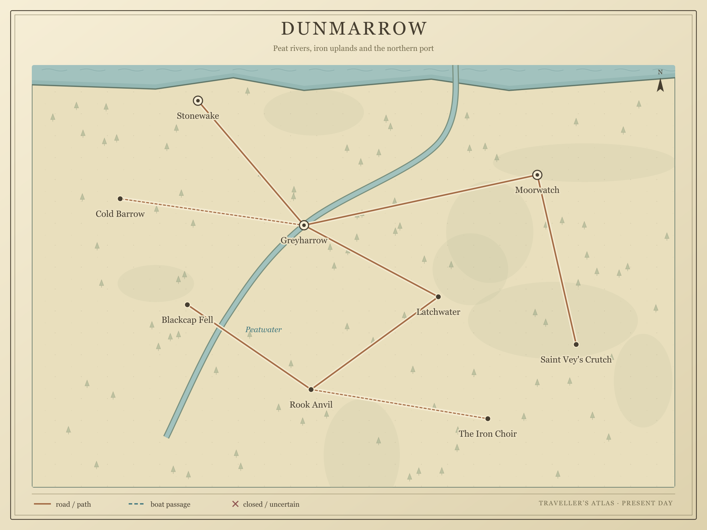
Named connections (12)
| From | To | Passage | Conditions |
|---|
| Stonewake | Greyharrow | Road | |
| Greyharrow | Moorwatch | Road | |
| Moorwatch | Saint Vey's Crutch | Road | |
| Greyharrow | Latchwater | Road | |
| Latchwater | Rook Anvil | Road | |
| Rook Anvil | Blackcap Fell | Road | |
| Greyharrow | Cold Barrow | Footpath | |
| Rook Anvil | The Iron Choir | Footpath | Approach to the abandoned mine only; sealed workings are not an onward road. |
| Stonewake | Penross | Road | |
| Greyharrow | Redgate | Road | |
| Moorwatch | Redgate | Road | |
| Saint Vey's Crutch | Whitewindow | Road | |
Veyr Marches
Nine march roads meet at Redgate; the Roven branches climb north
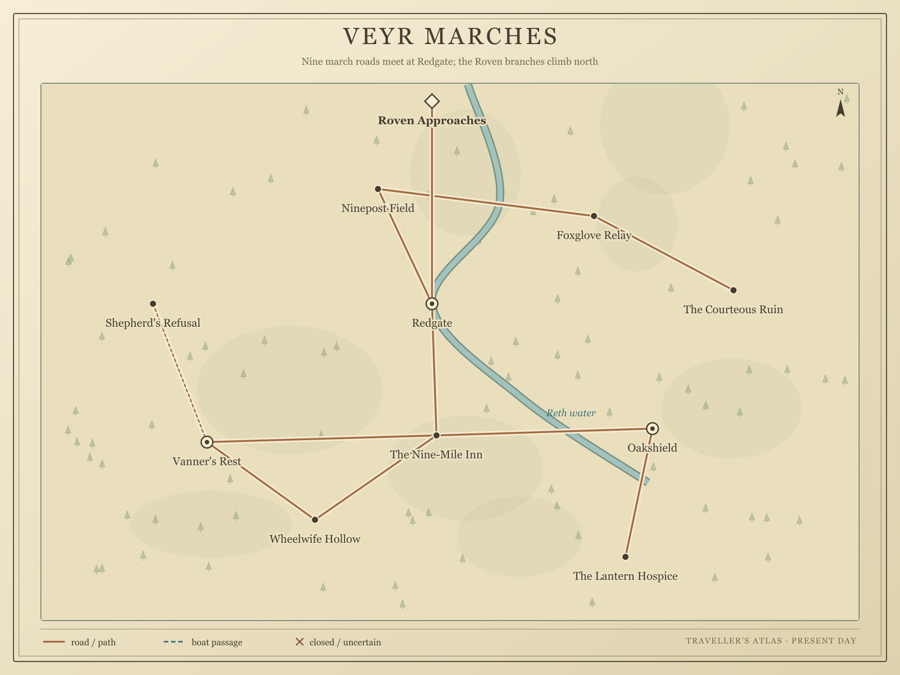
Roven Approaches
Named connections (14)
| From | To | Passage | Conditions |
|---|
| Vanner's Rest | The Nine-Mile Inn | Road | |
| The Nine-Mile Inn | Redgate | Road | |
| Redgate | Ninepost Field | Road | |
| Ninepost Field | Foxglove Relay | Road | |
| Foxglove Relay | The Courteous Ruin | Road | |
| Vanner's Rest | Wheelwife Hollow | Road | |
| Wheelwife Hollow | The Nine-Mile Inn | Road | |
| The Nine-Mile Inn | Oakshield | Road | |
| Oakshield | The Lantern Hospice | Road | |
| Vanner's Rest | Shepherd's Refusal | Footpath | |
| Greyharrow | Redgate | Road | |
| Moorwatch | Redgate | Road | |
| Tallow Ford | Redgate | Road | |
| Oakshield | Dunwarren | Road | |
Roven Approaches
The maintained winter descent and the unfinished stair are different branches
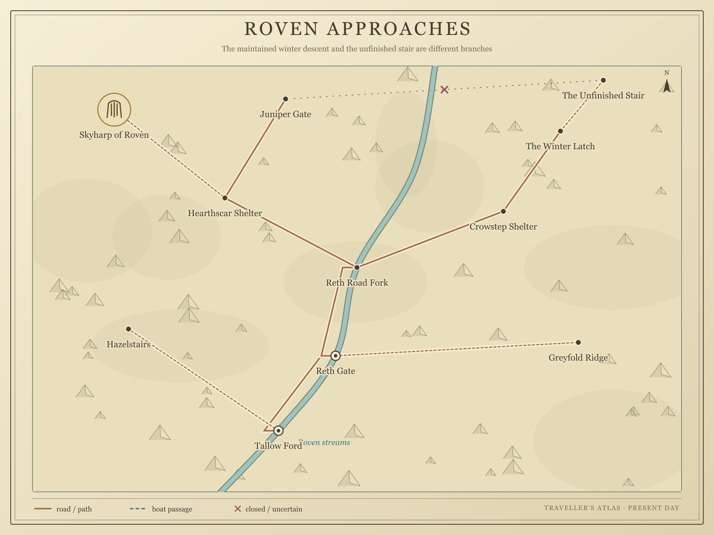
Named connections (12)
| From | To | Passage | Conditions |
|---|
| Tallow Ford | Reth Gate | Road | |
| Reth Gate | Reth Road Fork | Road | |
| Reth Road Fork | Hearthscar Shelter | Road | |
| Hearthscar Shelter | Juniper Gate | Road | |
| Reth Road Fork | Crowstep Shelter | Road | |
| Crowstep Shelter | The Winter Latch | Road | |
| Tallow Ford | Hazelstairs | Footpath | |
| Reth Gate | Greyfold Ridge | Footpath | Working surface approach only; deeper quarry passages remain sealed. |
| The Winter Latch | The Unfinished Stair | Footpath | A terminal climb to the unfinished span; no through-pass. |
| Juniper Gate | Whitewindow | Road | |
| Tallow Ford | Redgate | Road | |
| Skyharp of Roven | Hearthscar Shelter | Footpath | A maintained ledge spur ends at the grounded harp platform. There is no crossing to Juniper Gate, Crowstep, or the Unfinished Stair from the monument. |
Lornesse
Hanging valleys, worked stone and the Aunholt terraces
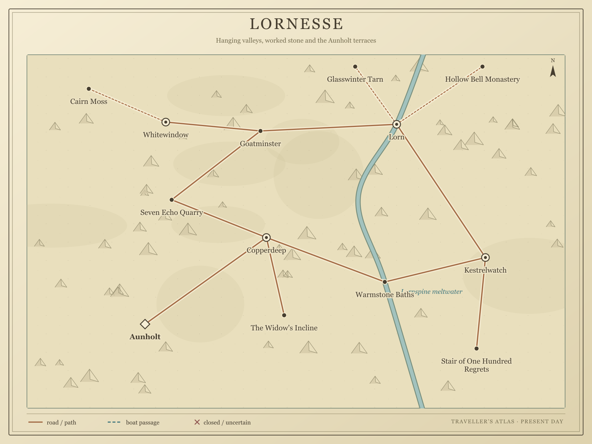
Aunholt
Named connections (16)
| From | To | Passage | Conditions |
|---|
| Whitewindow | Goatminster | Road | |
| Goatminster | Lorn | Road | |
| Lorn | Kestrelwatch | Road | |
| Kestrelwatch | Stair of One Hundred Regrets | Road | |
| Goatminster | Seven Echo Quarry | Road | |
| Seven Echo Quarry | Copperdeep | Road | |
| Copperdeep | Warmstone Baths | Road | |
| Warmstone Baths | Kestrelwatch | Road | |
| Copperdeep | The Widow's Incline | Road | |
| Whitewindow | Cairn Moss | Footpath | |
| Lorn | Glasswinter Tarn | Footpath | Shore observation path only; the tarn is not an ice crossing. |
| Lorn | Hollow Bell Monastery | Footpath | |
| Saint Vey's Crutch | Whitewindow | Road | |
| Juniper Gate | Whitewindow | Road | |
| Kestrelwatch | Dunwarren | Road | |
| Goat's Ledger | Copperdeep | Road | |
Aunholt
Mountain loads change hands above the woodland hamlets
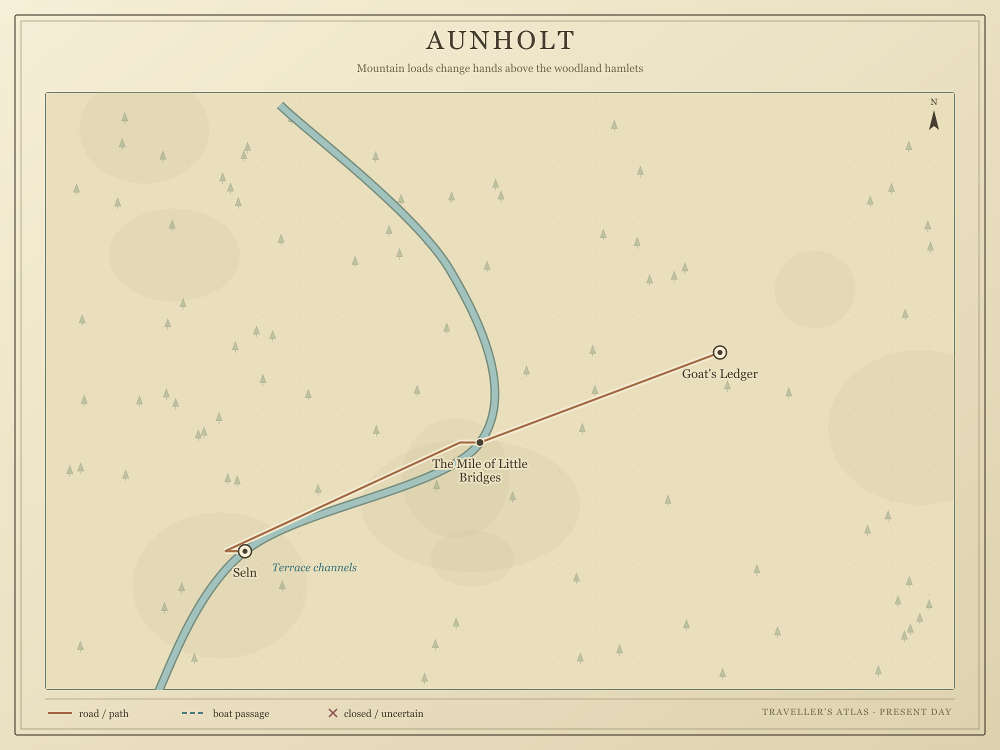
Seln
Named connections (4)
| From | To | Passage | Conditions |
|---|
| Goat's Ledger | The Mile of Little Bridges | Road | |
| The Mile of Little Bridges | Seln | Road | |
| Goat's Ledger | Copperdeep | Road | |
| Seln | The Listening House | Map entrance | Entrance between the wider map and the local street or landing. This is a scope transition, not a same-plane on-foot journey. |
Seven Lamps League
Commercial cities of the western Solascan shore
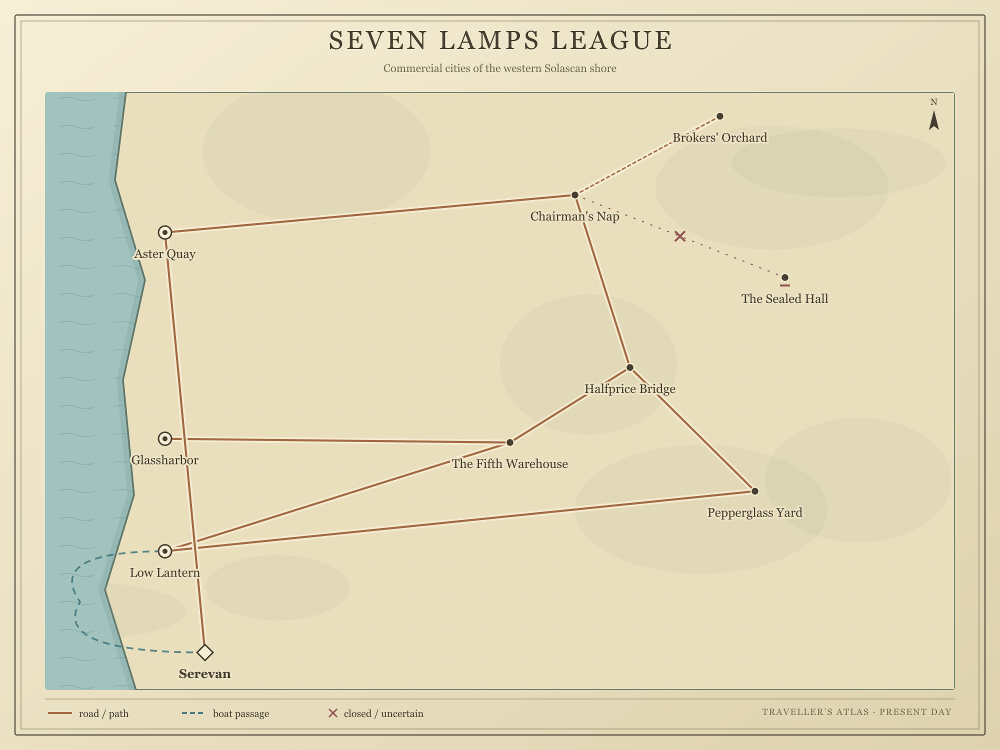
Aster Quay · Serevan
Named connections (15)
| From | To | Passage | Conditions |
|---|
| Aster Quay | Chairman's Nap | Road | |
| Chairman's Nap | Halfprice Bridge | Road | |
| Halfprice Bridge | The Fifth Warehouse | Road | |
| The Fifth Warehouse | Low Lantern | Road | |
| Halfprice Bridge | Pepperglass Yard | Road | |
| Pepperglass Yard | Low Lantern | Road | |
| The Fifth Warehouse | Glassharbor | Road | |
| Chairman's Nap | Brokers' Orchard | Footpath | |
| Aster Quay | Leth Sarai | Road | |
| Low Lantern | Vessa | Road | |
| Brinefold | Glassharbor | Sea passage | Registered sea passage between harbours; vessel, pilotage and weather are required. No on-foot route is created. |
| Nacre Quay | Aster Quay | Sea passage | Registered sea passage between harbours; vessel, pilotage and weather are required. No on-foot route is created. |
| Leth Sarai | Low Lantern | Sea passage | Registered sea passage between harbours; vessel, pilotage and weather are required. No on-foot route is created. |
| Low Lantern | Mariselle | Sea passage | Registered sea passage between harbours; vessel, pilotage and weather are required. No on-foot route is created. |
| Aster Quay | The Long Table Rooms | Map entrance | Entrance between the wider map and the local street or landing. This is a scope transition, not a same-plane on-foot journey. |
Serevan
Leth Sarai faces the Morrow crossing; Istravel rises inland
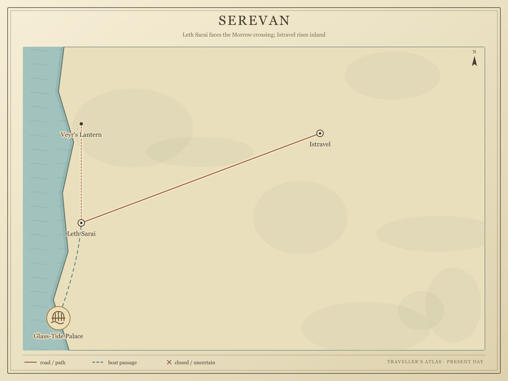
Leth Sarai · Istravel
Named connections (9)
| From | To | Passage | Conditions |
|---|
| Leth Sarai | Istravel | Road | |
| Leth Sarai | Veyr's Lantern | Footpath | Headland path; the name recalls old carrying ties, not the Veyr Marches' political boundary. |
| Aster Quay | Leth Sarai | Road | |
| Istravel | Namar Vale | Road | |
| The Halfway Light | Leth Sarai | Sea passage | Registered sea passage between harbours; vessel, pilotage and weather are required. No on-foot route is created. |
| Leth Sarai | Low Lantern | Sea passage | Registered sea passage between harbours; vessel, pilotage and weather are required. No on-foot route is created. |
| Leth Sarai | Lastlight Pier | Map entrance | Entrance between the wider map and the local street or landing. This is a scope transition, not a same-plane on-foot journey. |
| Istravel | The House of Two Hands | Map entrance | Entrance between the wider map and the local street or landing. This is a scope transition, not a same-plane on-foot journey. |
| Glass-Tide Palace | Leth Sarai | Ferry · boat required | A keeper-approved ferry reaches the raised landing. Tide and weather are checked locally; there is no dry causeway or on-foot journey across the water. |
Ordelain
The Aur plain, canal courts and the historic Selvar district
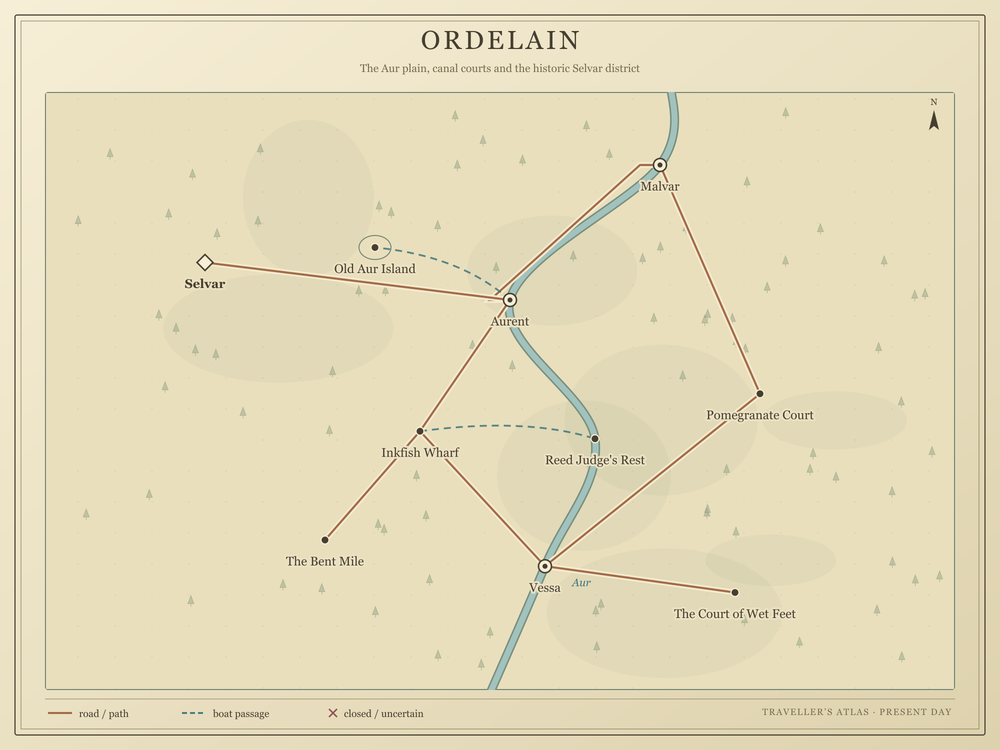
Selvar
Named connections (14)
| From | To | Passage | Conditions |
|---|
| Malvar | Aurent | Road | |
| Aurent | Inkfish Wharf | Road | |
| Inkfish Wharf | Vessa | Road | |
| Vessa | The Court of Wet Feet | Road | |
| Malvar | Pomegranate Court | Road | |
| Pomegranate Court | Vessa | Road | |
| Inkfish Wharf | The Bent Mile | Road | |
| Inkfish Wharf | Reed Judge's Rest | Ferry · boat required | |
| Aurent | Old Aur Island | Ferry · boat required | Landing access depends on river conditions; no permanent bridge is asserted. |
| Namar Vale | Aurent | Road | |
| Low Lantern | Vessa | Road | |
| Vessa | Reedcrown | Road | |
| Malvar | Var Keth | Road | |
| Aurent | Tessa | Road | |
Selvar
An inland carrying district east of Serevan
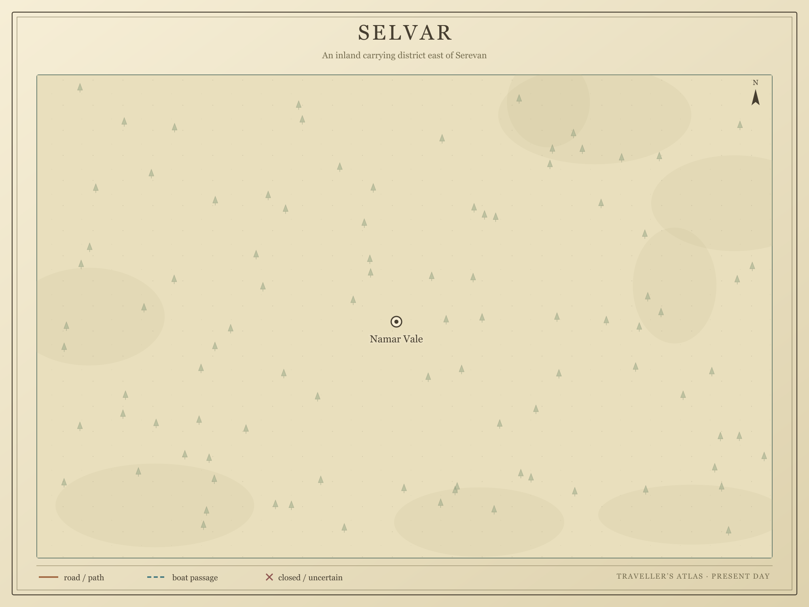
Namar Vale
Named connections (3)
| From | To | Passage | Conditions |
|---|
| Istravel | Namar Vale | Road | |
| Namar Vale | Aurent | Road | |
| Namar Vale | Saffron Court | Map entrance | Entrance between the wider map and the local street or landing. This is a scope transition, not a same-plane on-foot journey. |
Namarra
The Namar channels divide below the royal granaries
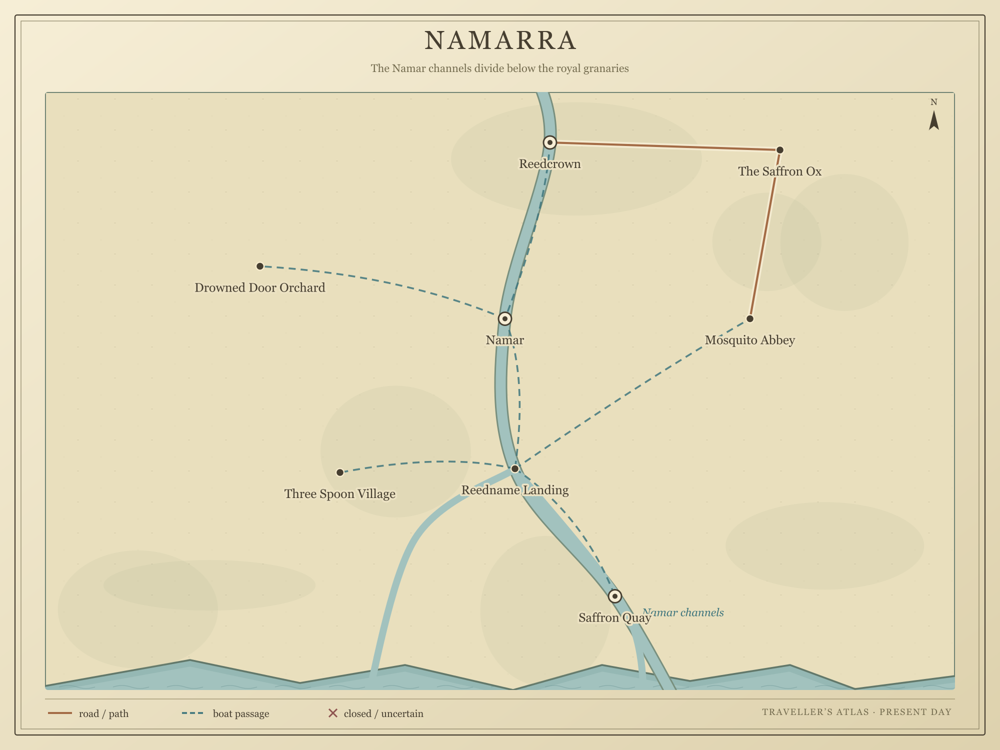
Named connections (10)
| From | To | Passage | Conditions |
|---|
| Reedcrown | The Saffron Ox | Road | |
| The Saffron Ox | Mosquito Abbey | Road | |
| Reedcrown | Namar | Ferry · boat required | A named channel passage requiring a boat and local pilotage. |
| Namar | Reedname Landing | Ferry · boat required | A named channel passage requiring a boat and local pilotage. |
| Reedname Landing | Saffron Quay | Ferry · boat required | A named channel passage requiring a boat and local pilotage. |
| Reedname Landing | Three Spoon Village | Ferry · boat required | A named channel passage requiring a boat and local pilotage. |
| Namar | Drowned Door Orchard | Ferry · boat required | A named channel passage requiring a boat and local pilotage. |
| Reedname Landing | Mosquito Abbey | Ferry · boat required | A named channel passage requiring a boat and local pilotage. |
| Vessa | Reedcrown | Road | |
| Saffron Quay | Orangewake | Sea passage | Registered sea passage between harbours; vessel, pilotage and weather are required. No on-foot route is created. |
Kethria
Copper terraces, snow gates and guarded volcanic uplands
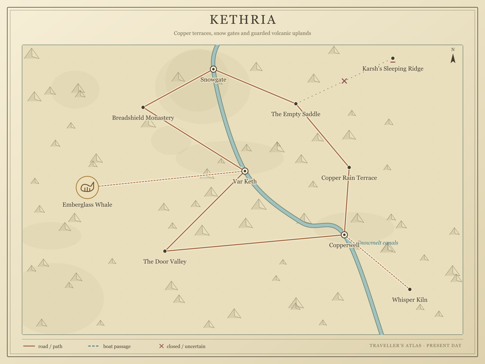
Named connections (11)
| From | To | Passage | Conditions |
|---|
| Snowgate | Breadshield Monastery | Road | |
| Breadshield Monastery | Var Keth | Road | |
| Var Keth | The Door Valley | Road | |
| The Door Valley | Copperwell | Road | |
| Copperwell | Copper Rain Terrace | Road | |
| Copper Rain Terrace | The Empty Saddle | Road | |
| The Empty Saddle | Snowgate | Road | |
| Copperwell | Whisper Kiln | Footpath | |
| Malvar | Var Keth | Road | |
| Copperwell | Orovant | Road | |
| Emberglass Whale | Var Keth | Footpath | The assayers' terrace path ends at the public jaw platform. The fragile rib interior and tail scaffold are not onward routes. |
Tessarane
High caravan roads, wells and astronomical sites
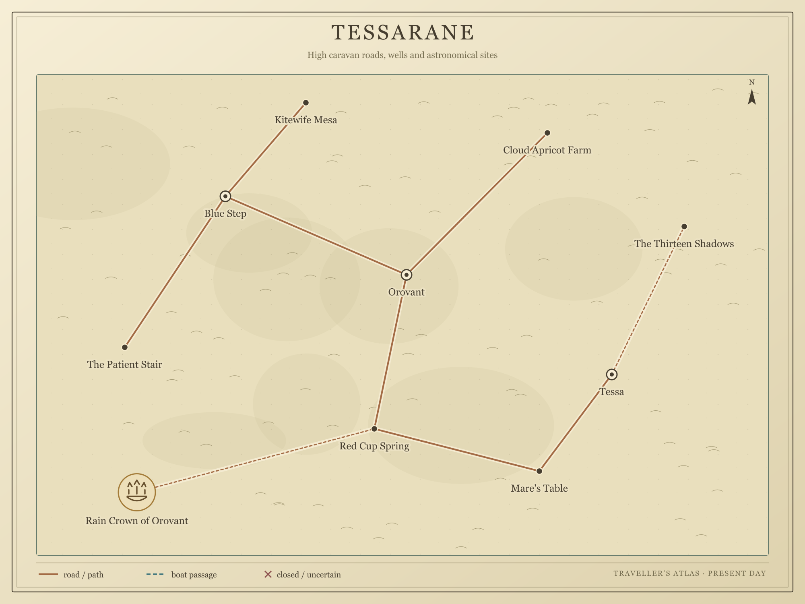
Named connections (11)
| From | To | Passage | Conditions |
|---|
| The Patient Stair | Blue Step | Road | |
| Blue Step | Orovant | Road | |
| Orovant | Red Cup Spring | Road | |
| Red Cup Spring | Mare's Table | Road | |
| Mare's Table | Tessa | Road | |
| Blue Step | Kitewife Mesa | Road | |
| Orovant | Cloud Apricot Farm | Road | |
| Tessa | The Thirteen Shadows | Footpath | |
| Copperwell | Orovant | Road | |
| Aurent | Tessa | Road | |
| Rain Crown of Orovant | Red Cup Spring | Footpath | A marked water-carriers' path reaches the cistern and ends there. No bridge, flight route, or climb to the floating crown is registered. |
Selucia
Island roads end at harbours; crossings require boats
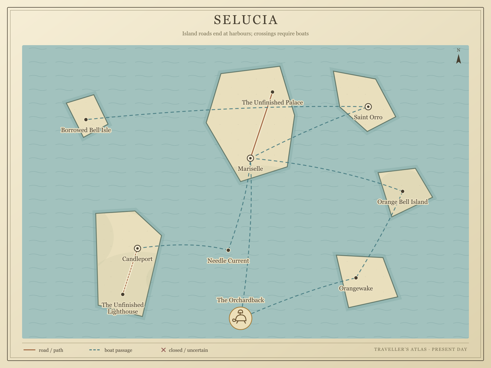
Named connections (13)
| From | To | Passage | Conditions |
|---|
| Mariselle | The Unfinished Palace | Road | |
| Candleport | The Unfinished Lighthouse | Footpath | |
| Candleport | Needle Current | Coastal sailing | Island passage; road continuity is not implied across water. |
| Needle Current | Mariselle | Coastal sailing | Island passage; road continuity is not implied across water. |
| Mariselle | Saint Orro | Coastal sailing | Island passage; road continuity is not implied across water. |
| Mariselle | Orange Bell Island | Coastal sailing | Island passage; road continuity is not implied across water. |
| Orange Bell Island | Orangewake | Coastal sailing | Island passage; road continuity is not implied across water. |
| Saint Orro | Borrowed Bell Isle | Coastal sailing | Island passage; road continuity is not implied across water. |
| Gullstrand | Candleport | Sea passage | Registered sea passage between harbours; vessel, pilotage and weather are required. No on-foot route is created. |
| Low Lantern | Mariselle | Sea passage | Registered sea passage between harbours; vessel, pilotage and weather are required. No on-foot route is created. |
| Saffron Quay | Orangewake | Sea passage | Registered sea passage between harbours; vessel, pilotage and weather are required. No on-foot route is created. |
| The Orchardback | Mariselle | Coastal sailing | A small-boat passage to the currently observed resting bay, subject to the keeper's daily invitation. This is not a permanent island crossing or a route aboard a controllable conveyance. |
| The Orchardback | Orangewake | Coastal sailing | Orchard tenders use a boat passage from Orangewake to the temporary pontoon. Access ceases when the animal stirs or leaves; no on-foot route is registered. |
Morrow Strait
Veymouth to Leth Sarai by the jointly maintained light
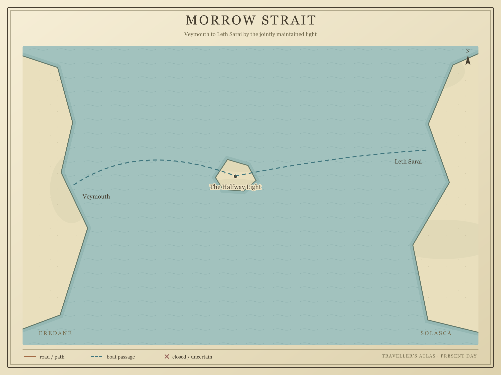
Named connections (2)
| From | To | Passage | Conditions |
|---|
| Veymouth | The Halfway Light | Sea passage | Registered sea passage between harbours; vessel, pilotage and weather are required. No on-foot route is created. |
| The Halfway Light | Leth Sarai | Sea passage | Registered sea passage between harbours; vessel, pilotage and weather are required. No on-foot route is created. |
Bramblebridge
The Lantern Road approaches from the west; the Weir divides the town
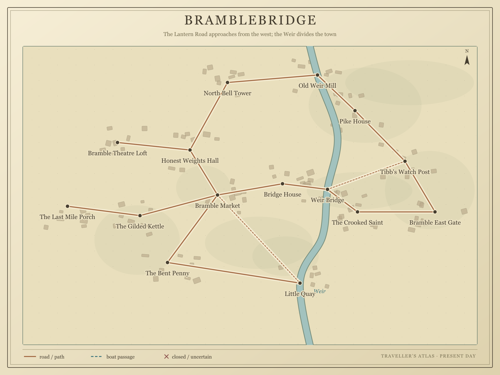
Named connections (18)
| From | To | Passage | Conditions |
|---|
| The Last Mile Porch | The Gilded Kettle | Road | |
| The Gilded Kettle | Bramble Market | Road | |
| Bramble Market | Bridge House | Road | |
| Bridge House | Weir Bridge | Road | |
| Weir Bridge | The Crooked Saint | Road | |
| The Crooked Saint | Bramble East Gate | Road | |
| Bramble Market | Honest Weights Hall | Road | |
| Honest Weights Hall | Bramble Theatre Loft | Road | |
| Bramble Market | The Bent Penny | Road | |
| The Bent Penny | Little Quay | Road | |
| Honest Weights Hall | North Bell Tower | Road | |
| North Bell Tower | Old Weir Mill | Road | |
| Old Weir Mill | Pike House | Road | |
| Pike House | Tibb's Watch Post | Road | |
| Tibb's Watch Post | Bramble East Gate | Road | |
| Bramble Market | Little Quay | Footpath | |
| Weir Bridge | Tibb's Watch Post | Footpath | The east-bank watch lane begins at the working bridge. |
| Bramblebridge | The Last Mile Porch | Map entrance | Entrance between the wider map and the local street or landing. This is a scope transition, not a same-plane on-foot journey. |
Highmead
The old Dunmere terraces below the Whitewall ridge
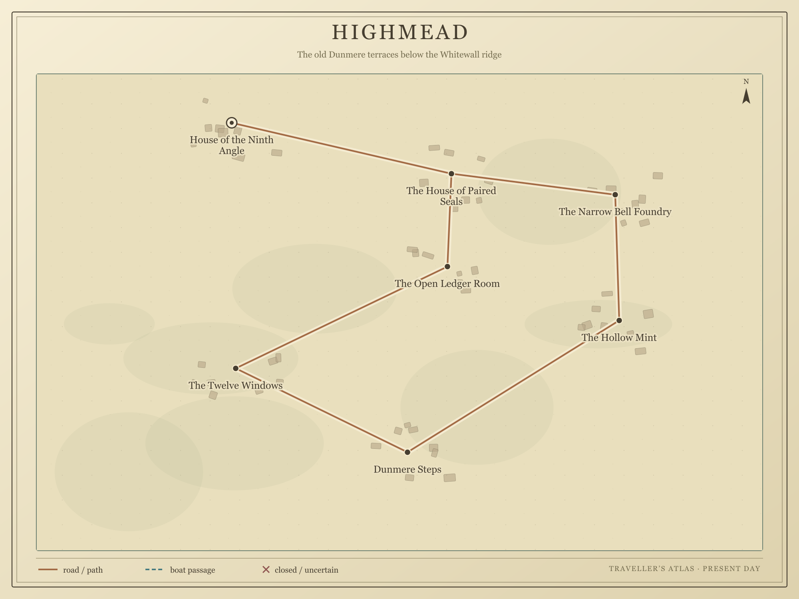
House of the Ninth Angle
Named connections (9)
| From | To | Passage | Conditions |
|---|
| Dunmere Steps | The Twelve Windows | Road | |
| The Twelve Windows | The Open Ledger Room | Road | |
| The Open Ledger Room | The House of Paired Seals | Road | |
| The House of Paired Seals | House of the Ninth Angle | Road | |
| Dunmere Steps | The Hollow Mint | Road | |
| The Hollow Mint | The Narrow Bell Foundry | Road | |
| The Narrow Bell Foundry | The House of Paired Seals | Road | |
| Highmead | Dunmere Steps | Map entrance | Entrance between the wider map and the local street or landing. This is a scope transition, not a same-plane on-foot journey. |
| House of the Ninth Angle | The Prediction Court | Map entrance | Entrance between the wider map and the local street or landing. This is a scope transition, not a same-plane on-foot journey. |
House of the Ninth Angle
A monastic precinct within Highmead
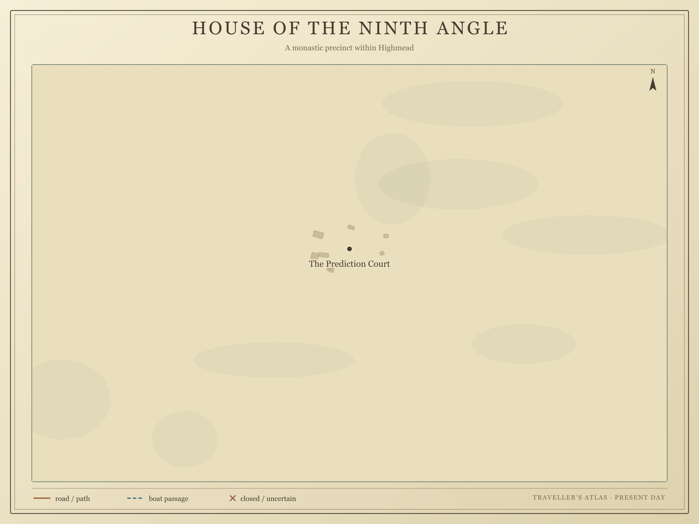
Named connections (1)
| From | To | Passage | Conditions |
|---|
| House of the Ninth Angle | The Prediction Court | Map entrance | Entrance between the wider map and the local street or landing. This is a scope transition, not a same-plane on-foot journey. |
Penn's Reach
Inspection paths along the sluices; protected water passage remains open
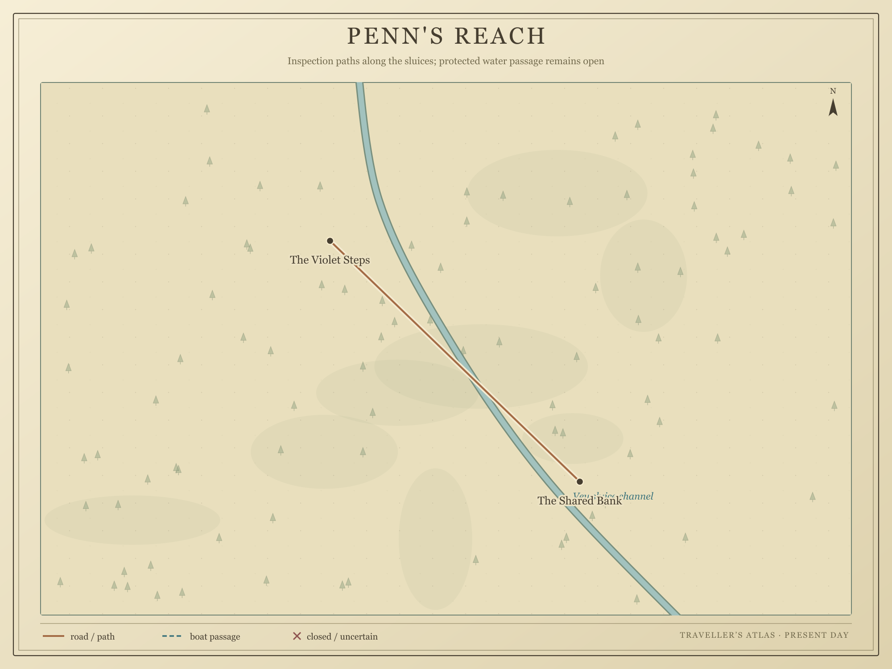
Named connections (2)
| From | To | Passage | Conditions |
|---|
| The Violet Steps | The Shared Bank | Road | |
| Penn's Reach | The Violet Steps | Map entrance | Entrance between the wider map and the local street or landing. This is a scope transition, not a same-plane on-foot journey. |
Boughmeet
Nursery lanes from the Harth road to the southern orchards
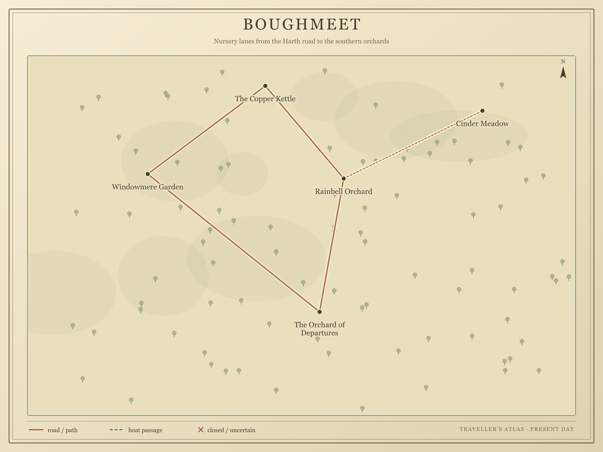
Named connections (6)
| From | To | Passage | Conditions |
|---|
| The Copper Kettle | Windowmere Garden | Road | |
| Windowmere Garden | The Orchard of Departures | Road | |
| The Orchard of Departures | Rainbell Orchard | Road | |
| Rainbell Orchard | The Copper Kettle | Road | |
| Rainbell Orchard | Cinder Meadow | Footpath | |
| Boughmeet | The Copper Kettle | Map entrance | Entrance between the wider map and the local street or landing. This is a scope transition, not a same-plane on-foot journey. |
Willowrace
Workshops on the near bank; grazing across Three-Reed Bridge
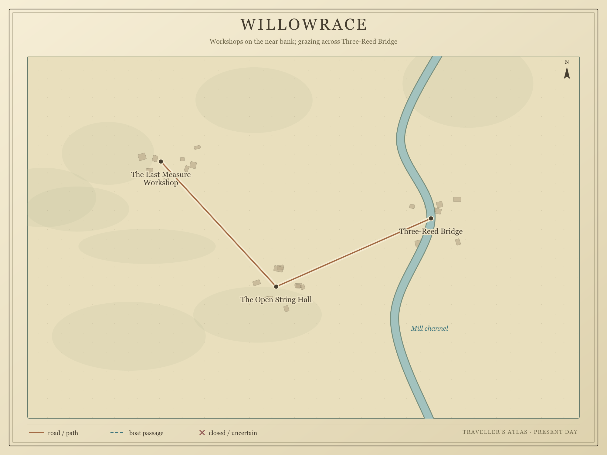
Named connections (3)
| From | To | Passage | Conditions |
|---|
| The Last Measure Workshop | The Open String Hall | Road | |
| The Open String Hall | Three-Reed Bridge | Road | |
| Willowrace | The Open String Hall | Map entrance | Entrance between the wider map and the local street or landing. This is a scope transition, not a same-plane on-foot journey. |
Brinefold
The active harbour stands inland of its drowned predecessor
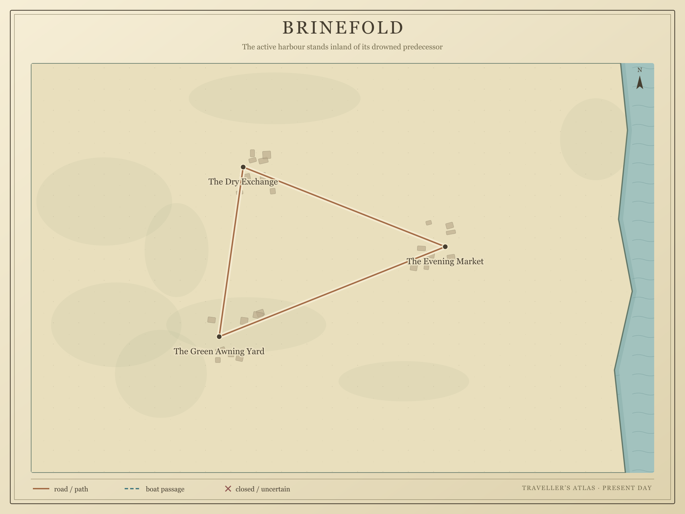
Named connections (4)
| From | To | Passage | Conditions |
|---|
| The Dry Exchange | The Evening Market | Road | |
| The Evening Market | The Green Awning Yard | Road | |
| The Green Awning Yard | The Dry Exchange | Road | |
| Brinefold | The Green Awning Yard | Map entrance | Entrance between the wider map and the local street or landing. This is a scope transition, not a same-plane on-foot journey. |
Leth Sarai
A western waterfront backed by workshops and archives
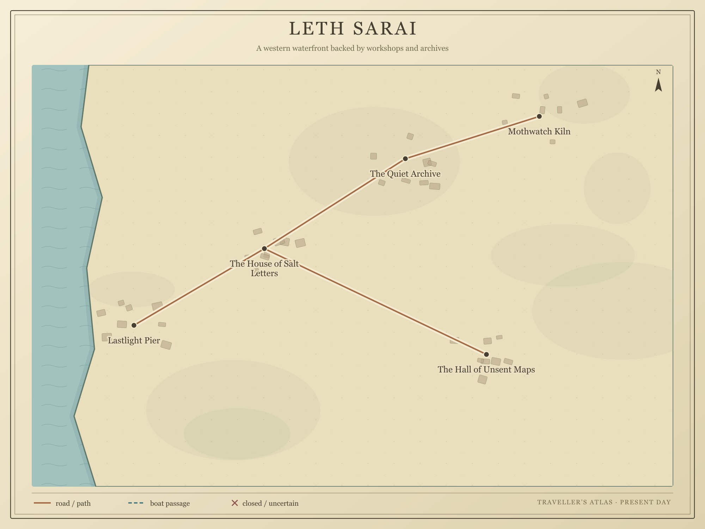
Named connections (5)
| From | To | Passage | Conditions |
|---|
| Lastlight Pier | The House of Salt Letters | Road | |
| The House of Salt Letters | The Quiet Archive | Road | |
| The Quiet Archive | Mothwatch Kiln | Road | |
| The House of Salt Letters | The Hall of Unsent Maps | Road | |
| Leth Sarai | Lastlight Pier | Map entrance | Entrance between the wider map and the local street or landing. This is a scope transition, not a same-plane on-foot journey. |
Istravel
Upper glass terraces above older kilns and gardens
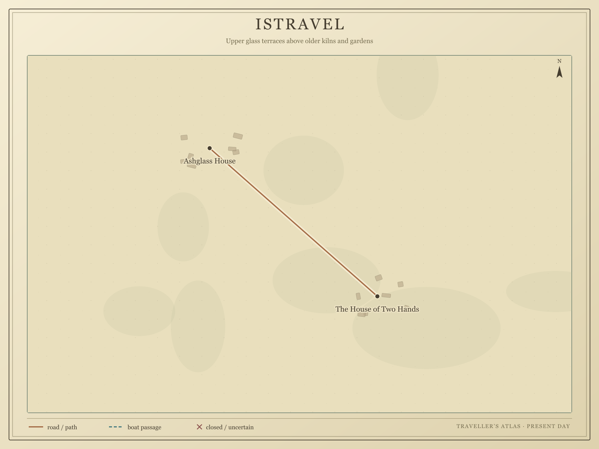
Named connections (2)
| From | To | Passage | Conditions |
|---|
| Ashglass House | The House of Two Hands | Road | |
| Istravel | The House of Two Hands | Map entrance | Entrance between the wider map and the local street or landing. This is a scope transition, not a same-plane on-foot journey. |
Namar Vale
Shared ovens and copying rooms beside the caravan yards
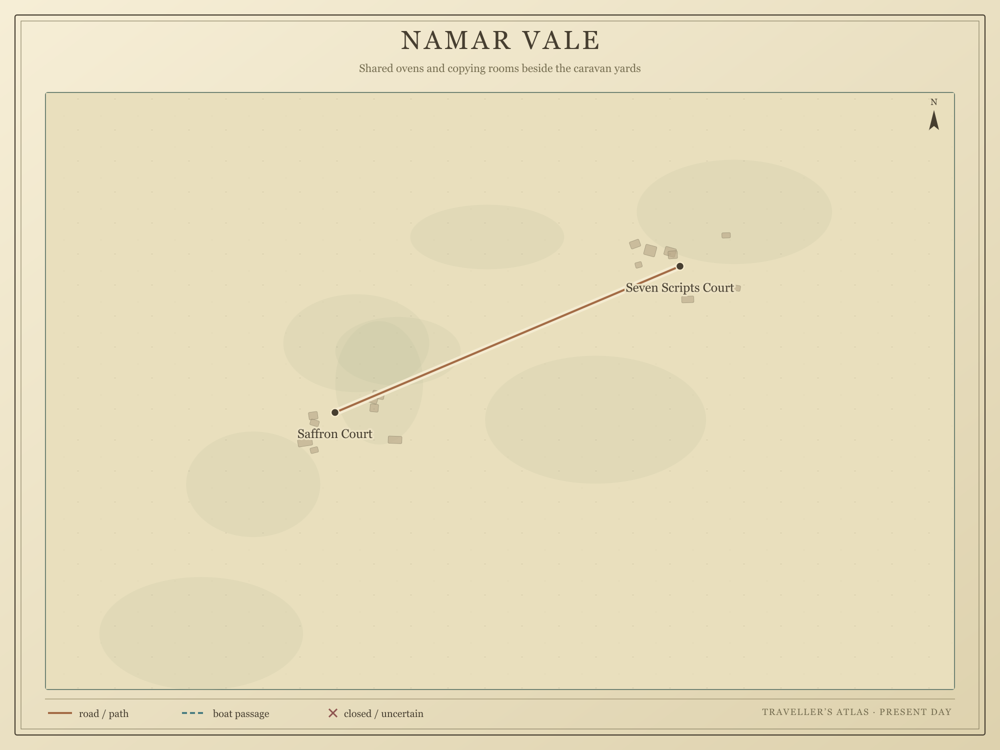
Named connections (2)
| From | To | Passage | Conditions |
|---|
| Saffron Court | Seven Scripts Court | Road | |
| Namar Vale | Saffron Court | Map entrance | Entrance between the wider map and the local street or landing. This is a scope transition, not a same-plane on-foot journey. |
Seln
Teaching houses at the edge of the managed singing woodland
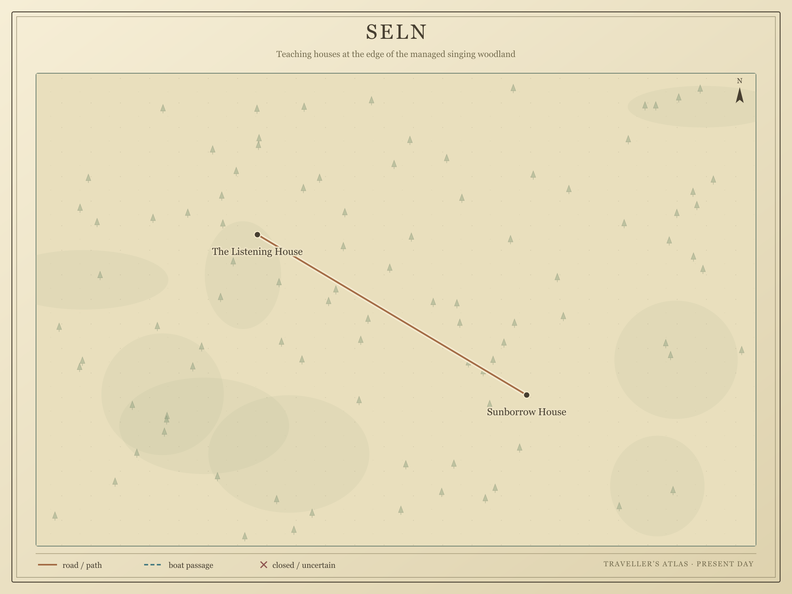
Named connections (2)
| From | To | Passage | Conditions |
|---|
| The Listening House | Sunborrow House | Road | |
| Seln | The Listening House | Map entrance | Entrance between the wider map and the local street or landing. This is a scope transition, not a same-plane on-foot journey. |
Sallowmere
The western lake and the surviving teaching gardens
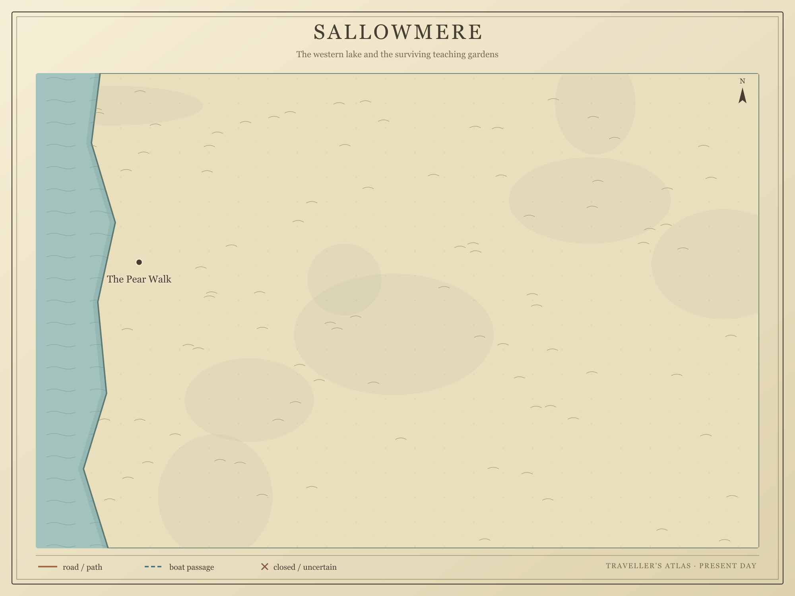
Named connections (1)
| From | To | Passage | Conditions |
|---|
| Sallowmere | The Pear Walk | Map entrance | Entrance between the wider map and the local street or landing. This is a scope transition, not a same-plane on-foot journey. |
Rusk Hollow
The living village lies above successive storehouse chambers
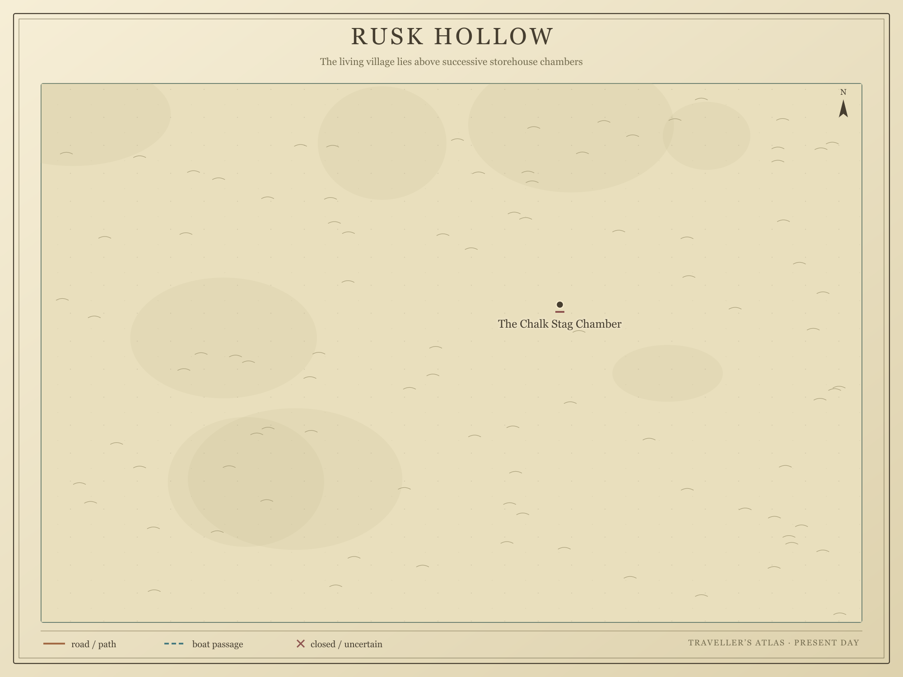
Rookwater
The ferry village and its search archive
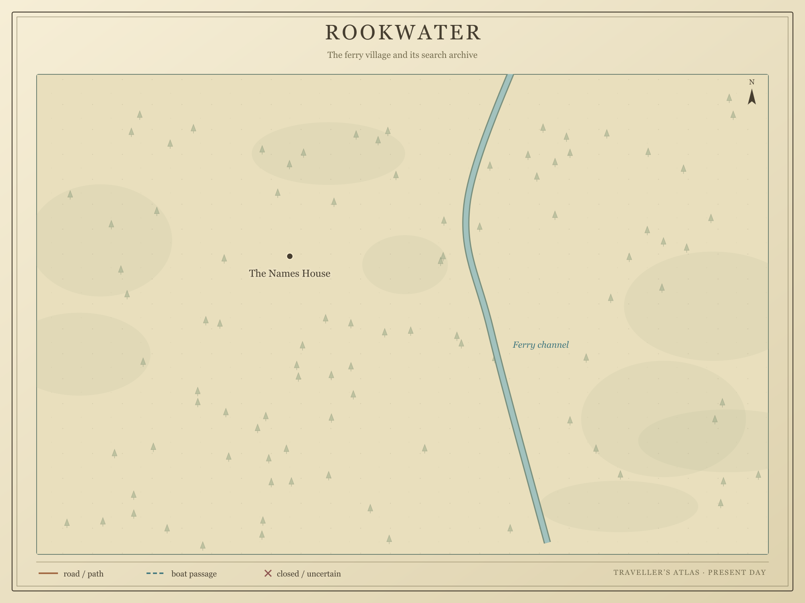
Named connections (1)
| From | To | Passage | Conditions |
|---|
| Rookwater | The Names House | Map entrance | Entrance between the wider map and the local street or landing. This is a scope transition, not a same-plane on-foot journey. |
Gullstrand
Harbour approaches and the civic waterfront
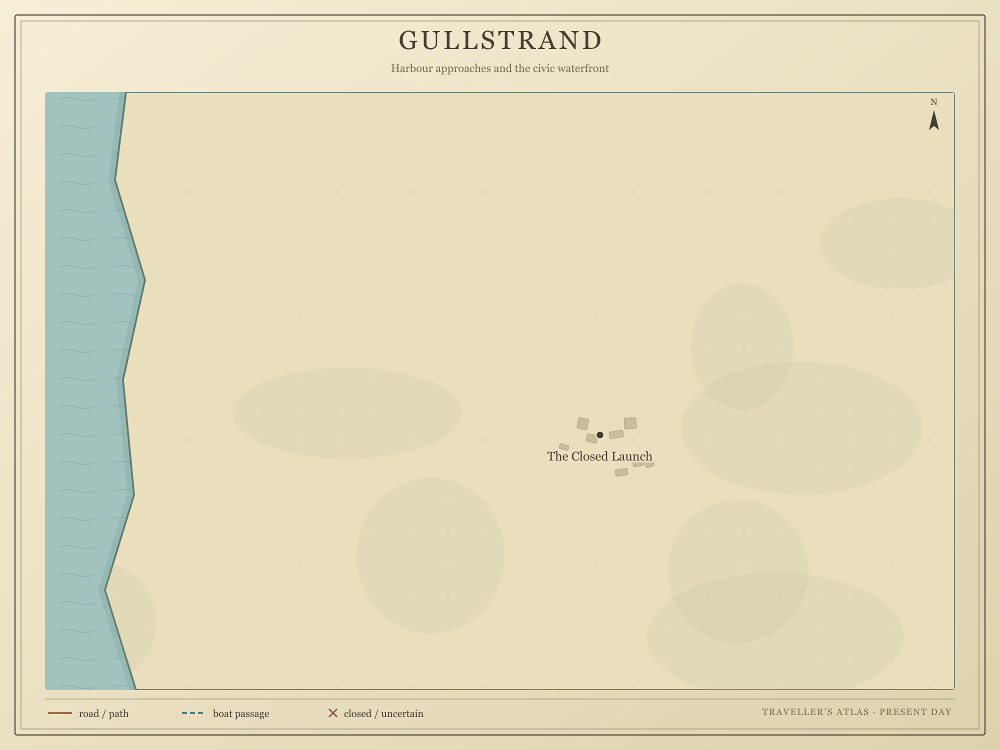
Named connections (1)
| From | To | Passage | Conditions |
|---|
| Gullstrand | The Closed Launch | Map entrance | Entrance between the wider map and the local street or landing. This is a scope transition, not a same-plane on-foot journey. |
Aster Quay
Harbour approaches and the civic waterfront
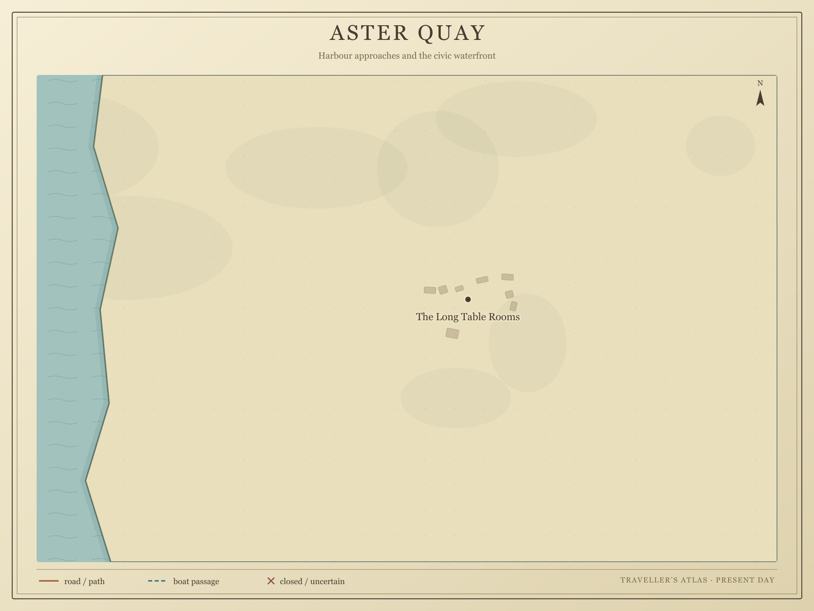
Named connections (1)
| From | To | Passage | Conditions |
|---|
| Aster Quay | The Long Table Rooms | Map entrance | Entrance between the wider map and the local street or landing. This is a scope transition, not a same-plane on-foot journey. |